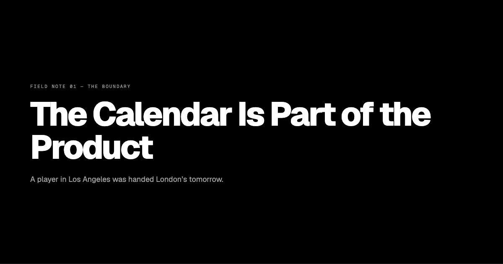
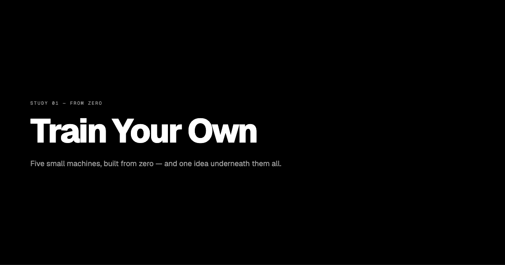
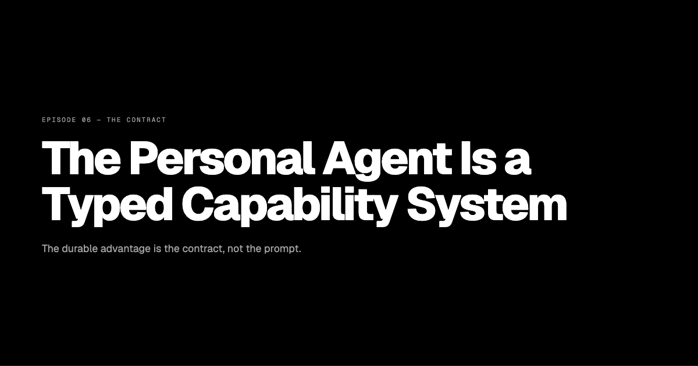

Ideas thatrefuse to stay quiet.
Essays from the notebook, and full-screen decks talked over. Same head, two formats — long-form thinking you can read, or listen to while you work.
Latest essays
All 88 →- Acceptance as a Status Boundary
Progressive acceptance did not end exclusion — it moved the fence from ancestry to cultural performance
→politics2026-08-29 - Conversation Is Biological Autocomplete
The 200-millisecond gap between turns makes deliberate reasoning impossible in fast conversation, so speech is cached prediction and the pauses are where the thinking lives
→communication2026-08-29 - Each Mind Is a Context Window
Every person is an unrepeatable context window, culture is the tokenizer, and disgust is the brain refusing to pay the cost of parsing an alien model
→communication2026-08-29
Latest decks
All decks →
FIELD NOTE 01 — THE BOUNDARYThe Calendar Is Part of the ProductA player in Los Angeles got London's tomorrow. Today and most recent both needed a boundary.

STUDY 01 — FROM ZEROTrain Your OwnFive small machines, built from zero — and one idea underneath them all.

EPISODE 06 — THE CONTRACTThe Personal Agent Is a Typed Capability SystemThe durable advantage is the contract, not the prompt.
Your knowledge deserves better than bookmarks.
Long-form thinking, distilled into essays and decks. No noise, no algorithm — just ideas that matter.